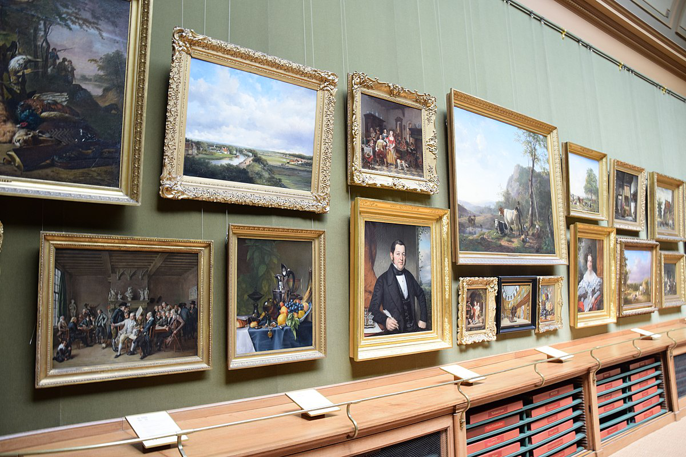
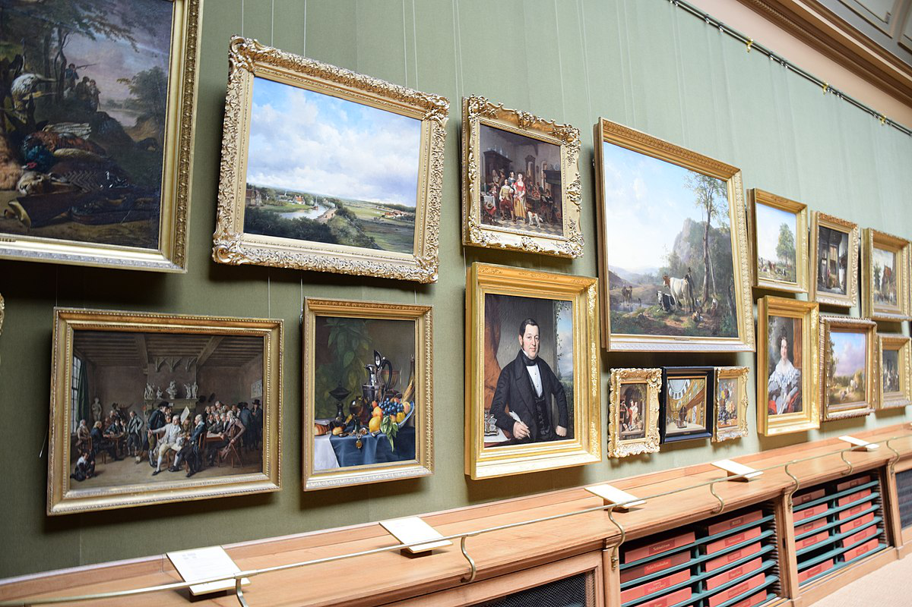
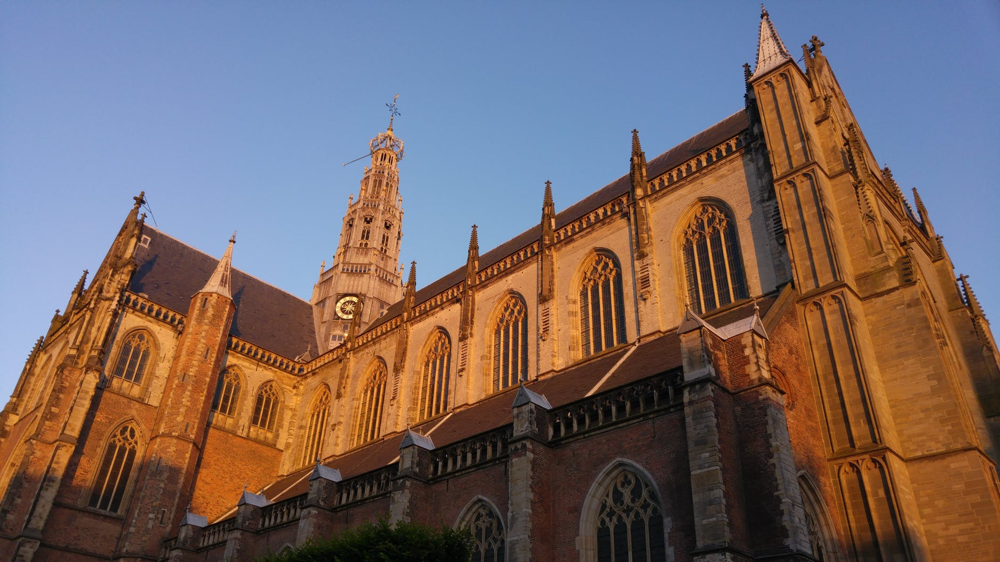
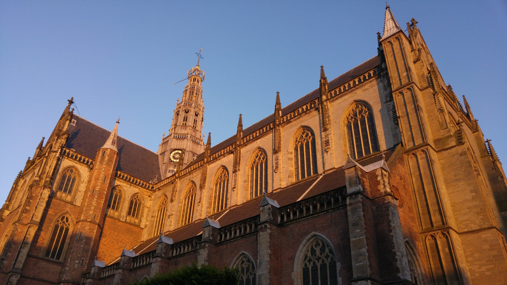

Haarlem has had a Christian parish church since the 9th century. This first church was a filial church
of Velsen, which itself was founded in 695 by Willibrord. It was a wooden church at the site of the
current Grote Kerk on the Grote Markt. That church became formally a cathedral in 1559 when the first
bishop Nicolaas van Nieuwland was appointed. Only 19 years later, after the Siege of Haarlem, the church
was confiscated and converted to Protestantism as part of the Protestant Reformation. At this time most
of the art and silver artefacts were also seized and what has survived is now in the collection of the
Frans Hals Museum. The Haarlem Catholics took what they could carry with them and went underground.
Since the Netherlands was officially no longer a Catholic nation, the underground Catholic places of
worship were no longer called churches or kerken, but mission stations or staties. It is unknown how
many staties existed in Haarlem at the end of the seventeenth century, but since town records show that
these underground churches were tolerated and taxed by the Haarlem council in the eighteenth century, we
can be certain that at least seven had more than 300 attendees for mass.
The station known as the St. Josephs statie met in a converted private home on the Goudsmitsplein until
a Waterstaatskerk was built in 1853 in the Jansstraat behind the Grote Kerk, called the St. Joseph kerk.
This church, with its formal exterior on the street, became the most popular Haarlem Catholic church.
Slowly the other staties were closed in favor of this one Catholic church.
The various artefacts that survived from the Reformation, as well as from other defunct Haarlem catholic
collections, have thus found their way into the collection and are now in the schatkamer, such as a
17th-century painting of the patron saint Bavo and silver from the chapel of Louis Napoleon, who resided
for more than a decade at Villa Welgelegen. There are old chasubles, dalmatics, and surplices of the
Haarlem clergy, richly embroidered, and showing popular Catholic themes. The French ones are probably
also from the Louis Napoleon period, but the earliest are Flemish in origin and date back to the early
16th century.
 

 
